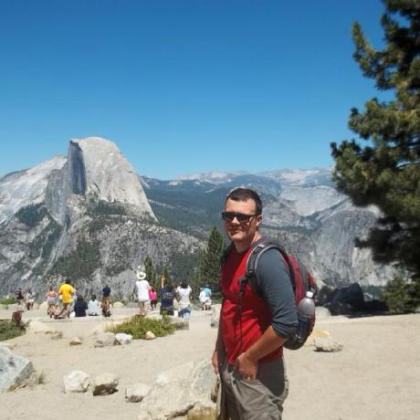

About Me
I recently finished my MBA as a full-time student (Information Systems and Statistics) at Baruch College and have moved to San Fransisco. Before going back to school full time, I managed technology operations at a mid-size digital agency in New York overseeing the development of hundreds of career websites for Fortune 500 companies. I also have significant experience as a project manager in the areas of web development and IT.
In 2012 I decided to go back to school in order to supplement my career skill set, which mostly comprised of project management and web development experience, by refocusing on developing my quantitative skills and management competence. It was a tremendous experience full of brilliant classmates and inspiring professors.
Outside of work and school I enjoy outdoorsy type stuff, such as camping and hiking, and obsessively reading the news.